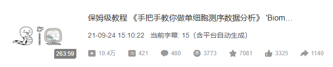
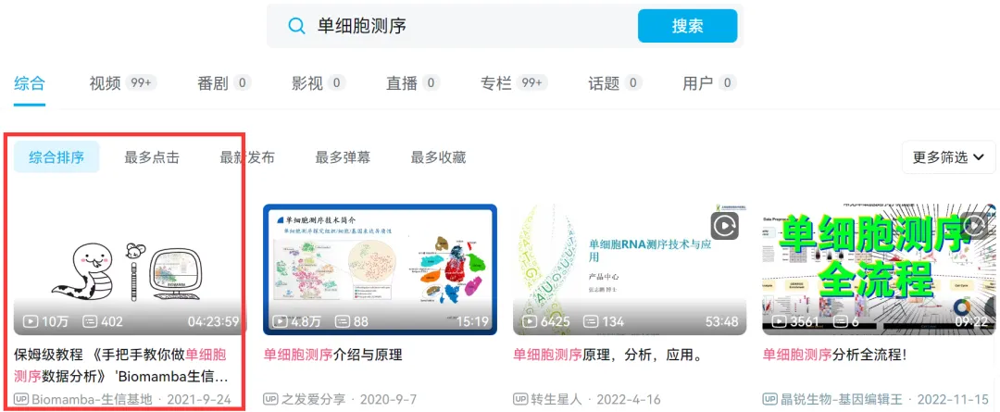

手把手教你做单细胞测序数据分析|1.绪论
原文：https://mp.weixin.qq.com/s?__biz=MzAwMzIzOTk5OQ==&mid=2247499776&idx=2&sn=7fc250d94ed88cfd5e2224f071bb1742&chksm=9b3cb950ac4b30467a082527547b91aec15b7d1f40d44e362894aedeb6a99e014518fa5e4743#rd 合集：单细胞教程全收录
 离最开始做单细系列课程 已经过去一年多啦。原本也就是随便搞搞，希望能够帮助大家降低一些学习门槛，少走些我走过的弯路。没想到的是，播放量越增越快，导致我不更完很难收场。目前我们的各类单细胞数据分析的视频课程基本都排在B站对应词条的头名 ，最高的课程播放量已经超过十三万 啦，收获了小伙伴们很多的好评与硬币
离最开始做单细系列课程 已经过去一年多啦。原本也就是随便搞搞，希望能够帮助大家降低一些学习门槛，少走些我走过的弯路。没想到的是，播放量越增越快，导致我不更完很难收场。目前我们的各类单细胞数据分析的视频课程基本都排在B站对应词条的头名 ，最高的课程播放量已经超过十三万 啦，收获了小伙伴们很多的好评与硬币 。
。

如果说你还没有看过这些视频，可就太可惜了，如果你看过这些课程并觉得Biomamba给你节省了科研经费/科研时间、为你提供了小小的帮助，那么欢迎大家在撰写Manuscript或毕业论文时加上这么一小段：
*
Since Biomamba and his wechat public account team produce bioinformatics tutorials elaborately and share code with annotation, we thank Biomamba for their guidance in bioinformatics and data analysis for the current study.
《手把手教你做单细胞测序数据分析 》 https://www.bilibili.com/video/BV1S44y1b76Z?p=1

认真学完本公众号中所有的单细胞教程，3~10分的SCI理应是囊中之物(当然也不要 真的去水文章)
一、准备工作
下面列几篇本公众号曾推送过的几篇文章作为本课程的学习基础，建议先行学习：1、测序与单细胞文献阅读 不要觉得这部分没有必要，良好的背景知识是开展任何研究的前提：测序技术的发展与应用 一些生物信息学的基本概念 Biomamba助推的第二篇文章!发表了！又来了！Biomamba生信基地助推的第四篇文章! 单细胞测序解析糖尿病肾病中肾小球的动态变化 Cell metabolism| 单细胞测序技术解析健康人与T2D患者的胰岛差异 Science| 小鼠全肾单细胞测序开篇之作 一篇不花钱就能白嫖的文章 不会吧不会吧，Nature都能白嫖？ 高氧下小鼠肺发育损伤的ScRNA图谱 IgAN & STRT-Seq 老树开新花—EGFR、肿瘤、免疫+scRNA-Seq 癌前基质细胞驱动BRCA1肿瘤发生 紧跟生信"钱"沿,胰腺癌&免疫多模态图谱 原发头颈癌和肿瘤转移微生态 《Cell Metabolism》：肾脏疾病&代谢&核受体ESRRA 《Nature communication》：PD-1&急性髓细胞性白血病&T Cell 单细胞测序揭示鼻咽癌微环境的基质动力学和肿瘤特异性特征 《Nature》：MYB调控衰竭性T细胞对检查点抑制的响应单细胞都能活检测序了？文献阅读(二十九)、单细胞测序做到什么程度能毕业|硕士篇 文献阅读(三十)、单细胞测序做到什么程度能毕业|博士篇2022年了，都有哪些器官/组织有scRNA-Seq数据|小鼠篇 2022年了，都有哪些器官/组织有scRNA-Seq数据|人类篇 2023年了, 都哪些物种有scRNA-Seq数据终于读到一篇用monocle3做拟时序的文章 单细胞转录组+亚细胞空间代谢组=25分文章 酸了，六个样本的scRNA-Seq+差异分析=9分文章自测scRNA-Seq+scWGBS=3分三区文章？ 百万级单细胞多组学数据集成
2、R语言基础 R语言是单细胞各组学必备的技能，网上的教程有很多，建议先掌握了R语言的基础后在来学习本课程哦。你可以通过下面的推送检查自己的R语言掌握情况： 打开R语言的大门 30条R语言基础命令 安装R包的几种方式 如何在Linux中安装指定版本的R 装着装着我R没了？
3、Linux基础Linux也是生物信息学绕不开的技能，好在我们已经给大家制作了教程，持续更新中，大家可以很方便的follow： 跟着Biomamba一起学Linux| 一.计算机硬件组成 Linux| 二.计算机软件组成与LinuxLinux| 三.免费获得Linux系统-WSLLinux| 四.免费获得Linux系统-虚拟机 Linux| 五.免费获得Linux系统-服务器 Linux| 六.命令行与与基本命令 Linux| 七.获取Linux命令帮助的几种方式 Linux| 八.Linux的文件目录系统 Linux| 九.路径查看与切换: pwd,cd,ls命令 Linux| 十.通配符Linux| 11.文件删除: rm命令 Linux| 12.文件的复制(cp)与移动(mv) Linux| 13.用户与组群概念 Linux| 14.用户管理命令(useradd, passwd, userdel, su) Linux| 15.文件权限管理: chown, chmod Linux| 16.快捷键 Linux| 17.输出重定向 Linux| 18.管道符 Linux| 19.文件查找 find, locate, which Linux| 20.别名 alias Linux| 21.软链接与硬链接 ln
二、视频教程
单细胞系列教程目录
单细胞数据分析系列教程：
B站视频，先看一遍视频再去看推送操作，建议至少看三遍：https://www.bilibili.com/video/BV1S44y1b76Z/以下的资料都可以在这里订阅：单细胞数据基础分析学习手册
单细胞测序基础数据分析保姆级教程，代码部分整理在往期推送之中：手把手教你做单细胞测序数据分析（一）——绪论 手把手教你做单细胞测序数据分析（二）——各类输入文件读取 手把手教你做单细胞测序数据分析（三）——单样本分析 手把手教你做单细胞测序数据分析（四）——多样本整合手把手教你做单细胞测序数据分析（五）——细胞类型注释 手把手教你做单细胞测序数据分析（六）——组间差异分析及可视化手把手教你做单细胞测序数据分析（七）——基因集富集分析 Seurat中分类变量处理技巧 沉浸式统计细胞比例
单细胞图片改造计划：改造单细胞降维图| 1.DimPlot的探索 改造单细胞降维图| 2.ggplot2中的DIY 改造单细胞降维图| 3.3D降维图与动图绘制
上游fastq文件处理： 单细胞分析的最上游——处理Fastq文件：cellranger 单细胞分析的最上游——处理Fastq文件：dropseqRunner有奖提问,这个smart-Seq2数据实战的比对率为何如此低？
细胞通讯B站连续播放起来比较方便： https://www.bilibili.com/video/BV1Ab4y1W7qx?p=1往期推送单细胞测序数据进阶分析—《细胞通讯》1.概论 单细胞测序数据进阶分析—《细胞通讯》2.1CellChat基础分析教程 单细胞测序数据进阶分析—《细胞通讯》2.2CellChat多组别分析 给你们申请到了免费的128GB云服务器 拟时序分析B站连续播放起来比较方便： https://www.bilibili.com/video/BV1br4y1x7Hf?p=1往期推送单细胞测序数据进阶分析—《拟时序分析》1.概论 单细胞测序数据进阶分析—《拟时序分析》2.monocle概论单细胞测序数据进阶分析—《拟时序分析》3.monocle2实操：完整版 单细胞测序数据进阶分析—《拟时序分析》4.初识monocle3 单细胞测序数据进阶分析—《拟时序分析》5.monocle3的降维、分群、聚类单细胞测序数据进阶分析—《拟时序分析》6.monocle3的拟时序分析 解决monocle2的orderCells报错的两种方法 一文搞定拟时序分析的下游可视化探索
其他单细胞相关技术贴也在这里：细胞的数量由誰决定？单细胞中应该如何做GSVA？答读者问（三）：单细胞测序前景答读者问（四）：如何分析细胞亚群答读者问（八）：为什么Read10X也会报错? 答读者问（十）整合后的表达矩阵，如何拆分出分组信息？ 答读者问（十一）如何一次性读取一个目录下的cellranger输出文件？ 给你安排一个懂生信的工具人（十）：不学编程 零代码完成单细胞测序数据分析：Loupe Browser 什么？不做单细胞也能分析细胞类群和免疫浸润？ 答读者问 （十三）查看Seurat对象时的ERROR：type='text' 各类单细胞对象（数据格式）转换大全（一）批量整理好GEO中下载的单细胞数据答读者问 （十五）稀疏矩阵转matrix, as.matrix函数是下下策 答读者问 （十六）做单细胞测序到底需要多少内存答读者问 （十七）调用的线程越多就算的越快嘛? 答读者问（十八）、一个我至少被问过30遍的monocle报错没有barcode文件的单细胞数据要怎么读取 单细胞基因集评分之AUCell 粉丝来稿|1. Seurat4相较于Seurat3的几点改动 如何加快Seurat的计算速度 一文搞定单细胞基因集评分答读者问（二十）四个单细胞样本只给了一套文件怎么读 人类单细胞测序数据中有哪些以"**-"开头的基因 为什么总把分辨率调的很高 Seurat中如何让细胞听你指挥 答读者问| 22.object 'CsparseMatrix_validate' not found
单细胞文献阅读：测序技术的发展与应用 一些生物信息学的基本概念 Biomamba助推的第二篇文章!发表了！又来了！Biomamba生信基地助推的第四篇文章! 单细胞测序解析糖尿病肾病中肾小球的动态变化 Cell metabolism| 单细胞测序技术解析健康人与T2D患者的胰岛差异 Science| 小鼠全肾单细胞测序开篇之作 一篇不花钱就能白嫖的文章 不会吧不会吧，Nature都能白嫖？ 高氧下小鼠肺发育损伤的ScRNA图谱 IgAN & STRT-Seq 老树开新花—EGFR、肿瘤、免疫+scRNA-Seq 癌前基质细胞驱动BRCA1肿瘤发生 紧跟生信"钱"沿,胰腺癌&免疫多模态图谱 原发头颈癌和肿瘤转移微生态 《Cell Metabolism》：肾脏疾病&代谢&核受体ESRRA 《Nature communication》：PD-1&急性髓细胞性白血病&T Cell 单细胞测序揭示鼻咽癌微环境的基质动力学和肿瘤特异性特征 《Nature》：MYB调控衰竭性T细胞对检查点抑制的响应单细胞都能活检测序了？文献阅读(二十九)、单细胞测序做到什么程度能毕业|硕士篇 文献阅读(三十)、单细胞测序做到什么程度能毕业|博士篇2022年了，都有哪些器官/组织有scRNA-Seq数据|小鼠篇 2022年了，都有哪些器官/组织有scRNA-Seq数据|人类篇 2023年了, 都哪些物种有scRNA-Seq数据终于读到一篇用monocle3做拟时序的文章 单细胞转录组+亚细胞空间代谢组=25分文章 酸了，六个样本的scRNA-Seq+差异分析=9分文章自测scRNA-Seq+scWGBS=3分三区文章？ 百万级单细胞多组学数据集成 单细胞注释复写单细胞注释复写(一):Human Fetal Kidney单细胞注释复写(二): human colorectal
非技术帖：生信分析为什么要使用服务器？ 为实验室准备一份生物信息学不动产

如何联系我们
 公众号后台消息更新不及时，超过48h便不允许回复读者消息，这里给大家留一下领取资料、免费服务(有root权限的共享服务器,你没有体验过的全新版本!)的微信号 ，方便各位随时交流、提建议(科研任务繁重，回复不及时请见谅)。此外呼声一直很高的交流群 也建好了，欢迎大家入群讨论：永久免费的千人生信、科研交流群
公众号后台消息更新不及时，超过48h便不允许回复读者消息，这里给大家留一下领取资料、免费服务(有root权限的共享服务器,你没有体验过的全新版本!)的微信号 ，方便各位随时交流、提建议(科研任务繁重，回复不及时请见谅)。此外呼声一直很高的交流群 也建好了，欢迎大家入群讨论：永久免费的千人生信、科研交流群
大家可以阅读完这几篇之后添加给生信入门初学者的小贴士 如何搜索公众号过往发布内容

 您点的每个赞和在看，我都认真当成了喜欢
您点的每个赞和在看，我都认真当成了喜欢